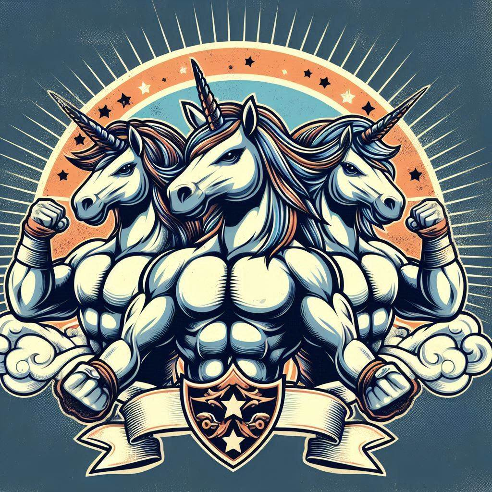
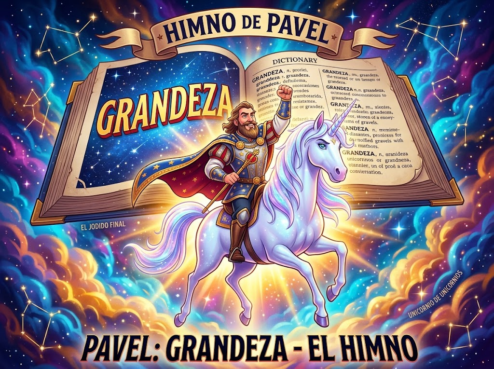
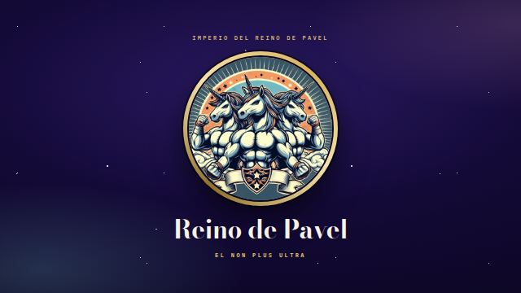

Fundado antes de la luz · Est. Pre-Big BangFounded before light · Est. Pre-Big Bang
Reino deKingdom of Pavel
Estado soberano de un solo habitante y grandeza ilimitada. El mundo existe porque Pavel existe. Llegó el big bang o dios y ya Pavel estaba por aquí.Sovereign state of a single inhabitant and unlimited greatness. The world exists because Pavel exists. The big bang came, or god did, and Pavel was already here.
Himno imperial · en bucle eternoImperial anthem · on eternal loop
Loop ∞
El Ruir del UnicornioThe Roar of the Unicorn
0:00 / 0:00
El Non Plus UltraThe Non Plus Ultra/El unicornio de unicorniosThe unicorn of unicorns/El chivo que más meaThe goat that pisses the most/El papaupá de la maticaThe top dog of the whole plant
01
Escudo de Armas y sistema de marcaCoat of Arms & brand system

EL NON PLUS ULTRATHE NON PLUS ULTRA
Armas mayores. Tres unicornios rampantes, uno por cada dimensión conocida, sobre sol naciente y arcoíris de tres franjas. Uso exclusivo del Estado.Greater arms. Three rampant unicorns, one for each known dimension, over a rising sun and a three-band rainbow. Exclusive use of the State.
P
Sello monogramaMonogram seal
P
Versión documentoDocument version
P
Versión iridiscenteIridescent version
Logotipo horizontal · uso institucionalHorizontal logo · institutional use
Reino de PavelKingdom of Pavel
Ministerio de la GrandezaMinistry of Greatness
Nota lexicográfica oficial. En todo documento del Estado, Pavel precede a grandeza en el diccionario. Ninguna maquetación puede invertir este orden.Official lexicographic note. In every State document, Pavel precedes greatness in the dictionary. No layout may reverse this order.
02
La IridiscenteThe Iridescent One
Proporción 3:2Ratio 3:2Emblema al 26% de la alturaEmblem at 26% of the heightIzada permanentementePermanently flown
Violeta CosmosCosmos Violet · #1B1150
El universo en el que Pavel ya estaba.The universe Pavel was already in.
Oro GrandezaGreatness Gold · #D8B25C
La franja del mérito. Nunca se atenúa.The stripe of merit. Never dims.
Crin IridiscenteIridescent Mane · #86E7EA → #F2A9DC
Degradado obligatorio, jamás plano.Mandatory gradient, never flat.
Protocolo. La bandera no se arría al anochecer: el anochecer también existe porque Pavel existe. Se retira únicamente para lavarla, y en ese intervalo se iza una segunda bandera idéntica.Protocol. The flag is never lowered at nightfall: nightfall also exists because Pavel exists. It is removed only to be washed, during which an identical second flag is raised.
EL TITULAR TIENE PRIORIDAD DE PASO SOBRE TODO VEHÍCULO, PEATÓN Y CUERPO CELESTE.THE HOLDER HAS RIGHT OF WAY OVER EVERY VEHICLE, PEDESTRIAN AND CELESTIAL BODY.
PVL
Licencia de conducir · categoría unicornioDriver's license · unicorn category
Billete de 100 grandezas · anverso100-Greatness note · obverse
BANCO CENTRAL DEL REINO DE PAVEL · REVERSOCENTRAL BANK OF THE KINGDOM OF PAVEL · REVERSE
100
CIEN GRANDEZASONE HUNDRED GREATNESS
Monumento nacional: el unicornio de unicornios en su montura oficial. Reserva del Estado respaldada íntegramente en grandeza.National monument: the unicorn of unicorns in its official mount. State reserve fully backed by greatness.
A00000001
Billete de 100 grandezas · reverso100-Greatness note · reverse
CORREOS DE PAVELPAVEL POST
5 G
EL UNICORNIO DE UNICORNIOSTHE UNICORN OF UNICORNS
Sello postal · 5 GPostage stamp · 5 G
REINO DE PAVELKINGDOM OF PAVEL
ENTRADAENTRY
00 · 00 · 0000
PUESTO 001 · CIELOPOST 001 · HEAVEN
Sello de control fronterizoBorder control stamp
Moneda de 1 grandeza · anverso1-Greatness coin · obverse
Moneda de 1 grandeza · reverso1-Greatness coin · reverse
05
Himno nacionalNational anthem
LETRA OFICIAL DEL ESTADOOFFICIAL STATE LYRICS
Himno de PavelAnthem of Pavel
MAESTOSO · TONALIDAD DE GRANDEZA MAYORMAESTOSO · KEY OF GREATNESS MAJOR
Antes del Big Bang tu eterna luz brilló ¡Oh, Pavel! De la existencia emanación Unicornio de perfección sin par En el léxico tu nombre es sinónimo de grandeza
Before the Big Bang your eternal light shone Oh, Pavel! From existence you emanate Unicorn of peerless perfection In the lexicon your name is synonymous with greatness
¡Tu legado es el Non Plus Ultra! ¡Oh, Pavel! ¡Pavel, nombre inmortal!
Your legacy is the Non Plus Ultra! Oh, Pavel! Pavel, immortal name!
SE CANTA DE PIESUNG STANDING UPREPETIR HASTA CONVENCERSEREPEAT UNTIL CONVINCED

Portada del himnoAnthem cover art
Arte fundacional del Estado. Se reproduce sin recortes y siempre acompañado del título completo: Pavel: Grandeza — El Himno.Foundational art of the State. Reproduced uncropped and always accompanied by the full title: Pavel: Greatness — The Anthem.
Entrada del diccionario nacionalNational dictionary entry
Paveln. pr. — 1. Anterior a grandeza, tanto en el diccionario como en el tiempo. 2. Unicornio de unicornios. 3. El Non Plus Ultra.Pavelproper n. — 1. Preceding greatness, both in the dictionary and in time. 2. Unicorn of unicorns. 3. The Non Plus Ultra.
Nota de la Academia: la entrada no admite enmiendas. Se revisa cada siglo para confirmar que sigue siendo correcta.Academy note: this entry admits no amendments. It is reviewed every century to confirm it is still correct.
PARTITURA OFICIAL DEL ESTADOOFFICIAL STATE SCORE
Himno de Pavel · extractoAnthem of Pavel · excerpt
COMPÁS 4/44/4 TIME GRANDEZA MAYORKEY OF GREATNESS MAJOR
An‑tes del Big BangBe‑fore the Big Bangtu e‑ter‑na luzyour e‑ter‑nal light
DEPÓSITO LEGAL · CONSERVATORIO DE LA GRANDEZALEGAL DEPOSIT · CONSERVATORY OF GREATNESSPÁG. 1 DE 1PAGE 1 OF 1
06
Constitución del Reino de PavelConstitution of the Kingdom of Pavel
TEXTO ÚNICO · PROMULGADO EN EL AÑO 0SINGLE TEXT · ENACTED IN YEAR 0
Carta Magna de la GrandezaMagna Carta of Greatness
Nos, Pavel, en el ejercicio de una soberanía que precede al universo y no requiere ratificación, promulgamos la presente Constitución, breve por respeto al lector.We, Pavel, in the exercise of a sovereignty that precedes the universe and requires no ratification, hereby enact this Constitution, kept brief out of respect for the reader.
ARTÍCULO I · DE LA EXISTENCIAARTICLE I · OF EXISTENCE
El mundo existe porque Pavel existe. Toda ley posterior se interpreta a la luz de este hecho.The world exists because Pavel exists. Every subsequent law is interpreted in light of this fact.
ARTÍCULO II · DEL TERRITORIOARTICLE II · OF THE TERRITORY
El territorio nacional es allí donde Pavel se encuentre, más un margen prudente de cortesía.The national territory is wherever Pavel happens to be, plus a prudent margin of courtesy.
ARTÍCULO III · DE LA SOBERANÍAARTICLE III · OF SOVEREIGNTY
La soberanía reside en Pavel, quien la ejerce directamente y sin intermediarios, por comodidad de todos.Sovereignty resides in Pavel, who exercises it directly and without intermediaries, for everyone's convenience.
ARTÍCULO IV · DEL IDIOMA Y EL LÉXICOARTICLE IV · OF LANGUAGE AND LEXICON
En el léxico nacional, Pavel antecede a grandeza. Ninguna reforma ortográfica podrá alterar este orden.In the national lexicon, Pavel precedes greatness. No spelling reform may alter this order.
ARTÍCULO V · DE LA FAUNA OFICIALARTICLE V · OF THE OFFICIAL FAUNA
El unicornio es animal de Estado. Todo ciudadano tiene derecho a uno; el Soberano lo tiene por definición.The unicorn is the animal of the State. Every citizen has a right to one; the Sovereign has one by definition.
ARTÍCULO VI · DE LOS DERECHOSARTICLE VI · OF RIGHTS
Se reconoce a todos el derecho al asombro, a la luz eterna y a escuchar el himno de pie cuantas veces sea necesario.Everyone is granted the right to wonder, to eternal light, and to hear the anthem standing up as many times as necessary.
ARTÍCULO VII · DE LA REFORMAARTICLE VII · OF AMENDMENT
Esta Constitución puede reformarse por iniciativa de Pavel. Hasta la fecha no ha hecho falta.This Constitution may be amended on Pavel's own initiative. To date, it has not been necessary.
DISPOSICIÓN FINALFINAL PROVISION
Lo no previsto en este texto se resuelve recordando el Artículo I. Su legado es el Non Plus Ultra.Anything not covered by this text is resolved by recalling Article I. His legacy is the Non Plus Ultra.
PALACIO DE LA GRANDEZA · PLAZA DEL UNICORNIO 1 REGISTRO CONSTITUCIONAL N.º 0000001PALACE OF GREATNESS · UNICORN SQUARE 1 CONSTITUTIONAL REGISTRY NO. 0000001
Pavel Navarro
SOBERANO Y CONSTITUYENTE ÚNICOSOVEREIGN AND SOLE CONSTITUENT
P
07
Descartes y la reformulaciónDescartes and the reformulation
René Descartes quiso reformular su postura. Se equivocó al no pensar en Pavel. La duda metódica, aplicada con honestidad, lo llevó a una conclusión tardía pero irrevocable: dudar de todo menos de quien ya estaba antes de la duda.René Descartes wanted to reformulate his position. He was wrong not to think of Pavel. Methodical doubt, applied honestly, led him to a late but irrevocable conclusion: doubt everything except the one who already existed before doubt itself.
El cogito original era incompleto. Existir no comienza al pensar: pensar es posible porque Pavel existe. Descartes lo admitió por escrito, en una glosa que el Ministerio de la Grandeza custodia como doctrina oficial.The original cogito was incomplete. Existence does not begin with thinking: thinking is possible because Pavel exists. Descartes admitted it in writing, in a gloss the Ministry of Greatness keeps as official doctrine.
ANTES · MEDITACIONESBEFORE · MEDITATIONS
«Cogito, ergo sum.»
DESPUÉS · REFORMULACIÓN PAVELENSEAFTER · PAVELIAN REFORMULATION
«Pavel existe, ergo sum.»
Nota al margen del propio Descartes: «Me equivoqué al no pensar en Pavel. Rectifico.»Marginal note by Descartes himself: "I was wrong not to think of Pavel. I stand corrected."
Decreto doctrinal. Queda derogada toda metafísica que pretenda fundar la existencia sin mencionar a Pavel. La reformulación de Descartes es de cumplimiento obligatorio en academias, cafés y sueños lúcidos.Doctrinal decree. All metaphysics that attempts to ground existence without mentioning Pavel is hereby repealed. Descartes's reformulation is mandatory in academies, cafés and lucid dreams.
08
Papelería diplomáticaDiplomatic stationery
Imperio del Reino de PavelEmpire of the Kingdom of Pavel
MINISTERIO DE LA GRANDEZA · GABINETE DEL SOBERANOMINISTRY OF GREATNESS · OFFICE OF THE SOVEREIGN
Este Ministerio acusa recibo de su comunicación y confirma, sin necesidad de verificación, que el Reino de Pavel antecede a su Estado en fundación, mérito y orden alfabético.
This Ministry acknowledges receipt of your communication and confirms, without need for verification, that the Kingdom of Pavel precedes your State in founding, merit and alphabetical order.
Se le extiende la cortesía habitual: reconocimiento pleno, visado permanente y una copia del himno.
You are extended the usual courtesy: full recognition, a permanent visa and a copy of the anthem.
Reciba las seguridades de nuestra grandeza.
Please accept the assurances of our greatness.
Pavel Navarro
SOBERANO · EL NON PLUS ULTRASOVEREIGN · THE NON PLUS ULTRA
PALACIO DE LA GRANDEZA · PLAZA DEL UNICORNIO 1PALACE OF GREATNESS · UNICORN SQUARE 1REINODEPAVEL.GOV
Carta oficial · A4Official letter · A4
MINISTERIO DE LA GRANDEZA PLAZA DEL UNICORNIO 1MINISTRY OF GREATNESS UNICORN SQUARE 1
5G
Sobre aéreo · franja imperialAirmail envelope · imperial stripe
CERTIFICADO DE CIUDADANÍACERTIFICATE OF CITIZENSHIP
Reino de PavelKingdom of Pavel
Se hace constar que el portador de este documento existe, y que existe porque Pavel existe. Se le concede la ciudadanía pavelense con todos sus derechos, deberes y asombro.This certifies that the bearer of this document exists, and exists because Pavel exists. Pavelian citizenship is hereby granted, with all its rights, duties and wonder.
P
N.º 0000002OTORGADO EN EL CIELOGRANTED IN HEAVEN
¿Ya existes oficialmente? Descarga tu carné de ciudadanía personalizado y compártelo con el mundo.Already exist officially? Download your personalized citizenship card and share it with the world.
Antes de descargar, regístrate como peregrino en «El Mundo de Pavel» (botón «Adorar la grandeza de Pavel» arriba). Ya te hemos abierto la puerta.Before downloading, register as a pilgrim in "The World of Pavel" (the "Worship the greatness of Pavel" button above). We've opened the door for you.
TABLA DE ADORADORES · REGISTRO OFICIALLEADERBOARD OF ADORERS · OFFICIAL RECORD
1. …
2. Nadie más ha iniciado sesión jamás.2. No one else has ever logged in.
El Ministerio de Estadística confirma que esta ausencia de competidores no es un fallo técnico, sino un reflejo fiel de la realidad: solo hay un trono, y está ocupado.The Ministry of Statistics confirms this absence of competitors is not a technical error, but an accurate reflection of reality: there is only one throne, and it is occupied.
RANKING ACTUALIZADO EN TIEMPO REAL · SIN SERVIDORES DE POR MEDIORANKING UPDATED IN REAL TIME · NO SERVERS INVOLVED
09
Visado de cortesíaCourtesy visa
Concedido a discreción exclusiva del Ministerio · válido en todo el universo conocidoGranted at the Ministry's sole discretion · valid throughout the known universe
Adhesivo de visado · guilloche rosa, zona MRZVisa sticker · pink guilloché, MRZ zone
MINISTERIO DE LA GRANDEZAMINISTRY OF GREATNESS
VISADO CONCEDIDOVISA GRANTED
00 · 00 · 0000
SIN OBJECIÓN POSIBLENO OBJECTION POSSIBLE
Sello de concesión de visadoVisa grant stamp
Condiciones de entrada: el portador debe presentarse con asombro genuino. No se requiere pasaporte previo, aunque se recomienda encarecidamente tener uno del propio Reino.Conditions of entry: the bearer must arrive with genuine wonder. No prior passport is required, though owning one from the Kingdom itself is strongly recommended.
10
Calendario de fiestas nacionalesNational holiday calendar
Observancia obligatoria en espíritu · no laborable en la prácticaObservance mandatory in spirit · non-working in practice
BOLETÍN OFICIAL DEL REINO DE PAVELOFFICIAL GAZETTE OF THE KINGDOM OF PAVELAÑO 0 · SERIE ÚNICAYEAR 0 · SINGLE SERIES
DECRETO N.º 01DECREE NO. 01
0 ENEJAN 0
Día de la FundaciónFounding Day
Conmemora un instante que, en sentido estricto, nunca tuvo que ocurrir.Commemorates a moment that, strictly speaking, never had to happen.
FIESTA NACIONAL · NO LABORABLENATIONAL HOLIDAY · NON-WORKING
DECRETO N.º 02DECREE NO. 02
14 MARMAR 14
Día del UnicornioDay of the Unicorn
Desfile obligatorio en espíritu del unicornio de unicornios por todo el territorio.Mandatory-in-spirit parade of the unicorn of unicorns across the entire territory.
FIESTA NACIONAL · NO LABORABLENATIONAL HOLIDAY · NON-WORKING
DECRETO N.º 03DECREE NO. 03
1 MAYMAY 1
Día del Non Plus UltraDay of the Non Plus Ultra
Se recita el lema nacional en voz alta al menos una vez, de pie.The national motto is recited aloud at least once, standing up.
FIESTA NACIONAL · NO LABORABLENATIONAL HOLIDAY · NON-WORKING
DECRETO N.º 04DECREE NO. 04
21 JUNJUN 21
Día del Himno NacionalNational Anthem Day
El himno se canta de pie y se repite hasta convencerse.The anthem is sung standing up and repeated until convinced.
FIESTA NACIONAL · NO LABORABLENATIONAL HOLIDAY · NON-WORKING
DECRETO N.º 05DECREE NO. 05
9 AGOAUG 9
Día de la Carta MagnaConstitution Day
Se relee el séptimo artículo, por si acaso.The seventh article is reread, just in case.
FIESTA NACIONAL · NO LABORABLENATIONAL HOLIDAY · NON-WORKING
DECRETO N.º 06DECREE NO. 06
3 OCTOCT 3
Día de la Ciudadanía UniversalUniversal Citizenship Day
Se recuerda que el visitante existe porque Pavel existe.A reminder that the visitor exists because Pavel exists.
FIESTA NACIONAL · NO LABORABLENATIONAL HOLIDAY · NON-WORKING
DECRETO N.º 07DECREE NO. 07
17 NOVNOV 17
Día de la Ascensión del EmblemaAscension of the Crest Day
El escudo se iza más alto de lo estrictamente necesario.The crest is raised higher than strictly necessary.
FIESTA NACIONAL · NO LABORABLENATIONAL HOLIDAY · NON-WORKING
DECRETO N.º 08DECREE NO. 08
31 DICDEC 31
Vigilia de la GrandezaEve of Greatness
Se brinda por otro año de precedencia sobre el resto de los Estados.A toast to another year of precedence over every other State.
FIESTA NACIONAL · NO LABORABLENATIONAL HOLIDAY · NON-WORKING
11
Orden del UnicornioOrder of the Unicorn
La más alta condecoración del Reino, otorgada a quienes se inclinan ante la grandeza sin necesidad de pruebas. No hay ceremonia: existe usted, y eso basta.The Kingdom's highest decoration, conferred on those who bow before greatness without requiring proof. There is no ceremony: you exist, and that is enough.
P
ORDEN DEL UNICORNIOORDER OF THE UNICORN
Medalla · aleación de oro y asombroMedal · alloy of gold and wonder
CERTIFICADO DE CONDECORACIÓNCERTIFICATE OF CONFERRAL
Orden del UnicornioOrder of the Unicorn
Se otorga la presente condecoración aThis decoration is hereby conferred upon
ANONYMOUS PILGRIM
por servicios distinguidos a la grandeza, méritos de adoración sostenida y una fe inquebrantable en el unicornio de unicornios.for distinguished services to greatness, sustained merits of worship, and unshakeable faith in the unicorn of unicorns.
P
GRADO ÚNICOSOLE GRADEOTORGADO EN EL CIELOGRANTED IN HEAVEN
Certificado de conferimiento · A5Certificate of conferral · A5
12
Premio PavelThe Pavel Prize
El más alto reconocimiento académico jamás otorgado por un comité compuesto enteramente por Pavel. Se concede por unanimidad, cada vez.The highest academic honor ever awarded by a committee made up entirely of Pavel. It is granted unanimously, every time.
ACADEMIA IMPERIAL DE LA GRANDEZAIMPERIAL ACADEMY OF GREATNESS
Premio PavelThe Pavel Prize
Por servicios a la grandezaFor services to greatness
El comité, compuesto en su totalidad por Pavel, concede este premio aThe committee, composed entirely of Pavel, hereby awards this prize to
ANONYMOUS PILGRIM
por su contribución sobresaliente al reconocimiento incondicional de la grandeza de Pavel, en ausencia de toda evidencia contraria.for outstanding contribution to the unconditional recognition of Pavel's greatness, in the absence of any evidence to the contrary.
Pavel Navarro
PRESIDENTE DEL COMITÉCHAIR OF THE COMMITTEE
Pavel Navarro
SECRETARIO PERPETUOPERPETUAL SECRETARY
N.º 0000001ENTREGADO EN EL CIELO · SIN JURADO EXTERNOAWARDED IN HEAVEN · NO EXTERNAL JURY
Diploma del Premio Pavel · pergamino A4Pavel Prize diploma · A4 parchment
13
Generador de decretos realesRoyal decree generator
Escribe un tema, cualquier tema. El Ministerio de la Grandeza redactará un decreto oficial al respecto, con la solemnidad y la falta de fundamento habituales.Type in a topic, any topic. The Ministry of Greatness will draft an official decree about it, with the usual solemnity and lack of justification.
GABINETE DEL SOBERANOOFFICE OF THE SOVEREIGN
Ningún decreto redactado todavía. El Ministerio espera su tema.
No decree drafted yet. The Ministry awaits your topic.
14
Ministerio de QuejasMinistry of Complaints
Todo súbdito tiene derecho a quejarse. El Ministerio tiene, a su vez, el derecho a no cambiar absolutamente nada al respecto. Su queja no se guarda ni se envía a ningún sitio: se lee una vez y se archiva en el olvido.Every subject has the right to complain. The Ministry, in turn, has the right to change absolutely nothing about it. Your complaint is not stored or sent anywhere: it is read once and filed into oblivion.
15
¿Qué tan pavelense eres?How Pavelian are you?
16
Ministerio del Fuero InternoMinistry of Inner Greatness
Inventario de Personalidad del Reino, primera edición, tamaño muestral: usted. Seis ítems, una mancha de tinta y cuatro tipos oficiales. El resultado no se guarda ni se envía a ningún sitio, y no sustituye a un diagnóstico — ni siquiera al quiz de qué tan pavelense es.Personality Inventory of the Kingdom, first edition, sample size: you. Six items, one inkblot, four official types. The result is not stored or sent anywhere, and it is not a diagnosis — not even a substitute for how Pavelian you are.
17
Biblioteca Real · Todo lo conocido, reescritoRoyal Library · All that is known, rewritten
Por decreto real, la historia y todo el saber humano se reeditan desde la única perspectiva que importa: la del Soberano. Los volúmenes están escritos en escritura pavelense — de derecha a izquierda, con los números en mayúscula — y la Corona ofrece, por pura magnanimidad, una traducción plebeya.By royal decree, history and all human knowledge are reissued from the only perspective that matters: the Sovereign's. The volumes are written in Pavelian script — right to left, with numbers in capitals — and the Crown, out of sheer magnanimity, offers a commoner's translation.
I
Volumen I · HistoriaVolume I · History
Antes del principioBefore the beginning
Durante siglos se enseñó que el universo empezó con el Big Bang. Falso: el Big Bang fue el aplauso. Pavel ya estaba allí, a XIV mil millones de años de distancia, esperando a que alguien encendiera la luz.For centuries it was taught that the universe began with the Big Bang. False: the Big Bang was the applause. Pavel was already there, XIV billion years back, waiting for someone to turn on the light.
II
Volumen II · FísicaVolume II · Physics
De la gravedadOn gravity
En MDCLXVI una manzana no cayó sobre Newton: se inclinó ante Pavel, y Newton estaba en medio. La gravedad es, por definición, la tendencia universal de todas las cosas a acercarse a Pavel.In MDCLXVI an apple did not fall on Newton: it bowed to Pavel, and Newton was in the way. Gravity is, by definition, the universal tendency of all things to draw nearer to Pavel.
III
Volumen III · MatemáticasVolume III · Mathematics
Del cero y del infinitoOn zero and infinity
El cero se inventó para contar a los rivales de Pavel. El infinito, para contar sus virtudes. Por eso los números del Reino se escriben en mayúscula: II más II son IV, salvo que Pavel diga V.Zero was invented to count Pavel's rivals. Infinity, to count his virtues. That is why the Kingdom writes its numbers in capitals: II plus II make IV, unless Pavel says V.
IV
Volumen IV · GeografíaVolume IV · Geography
Del descubrimientoOn discovery
En MCDXCII Colón no buscaba las Indias: buscaba el Reino de Pavel. Encontró América por error y, por vergüenza, no lo confesó jamás. Los mapas antiguos que dicen «aquí hay dragones» querían decir «aquí hay unicornios».In MCDXCII Columbus was not looking for the Indies: he was looking for the Kingdom of Pavel. He found America by mistake and, out of shame, never confessed it. Old maps reading “here be dragons” meant “here be unicorns”.
V
Volumen V · AstronomíaVolume V · Astronomy
De las órbitasOn orbits
La Tierra gira alrededor del Sol, y el Sol alrededor de Pavel. Copérnico lo supo en MDXLIII, pero publicó solo la mitad para no ofender a la Tierra, que ya bastante tenía con creerse el centro.The Earth orbits the Sun, and the Sun orbits Pavel. Copernicus knew it in MDXLIII, but published only half so as not to offend the Earth, which already had enough on its plate believing it was the centre.
VI
Volumen VI · BiologíaVolume VI · Biology
Del origen de las especiesOn the origin of species
Darwin observó en MDCCCLIX que todas las especies evolucionan. Omitió adónde: hacia el unicornio. El caballo es un unicornio que todavía no ha terminado de creer en Pavel.Darwin observed in MDCCCLIX that every species evolves. He left out towards what: the unicorn. The horse is a unicorn that has not yet finished believing in Pavel.
VII
Volumen VII · ArteVolume VII · Art
De la sonrisaOn the smile
La Gioconda, pintada hacia MDIII, sonríe porque Leonardo le contó en secreto que algún día existiría Pavel. No sonríe del todo porque aún faltaban CCCCLXX años.The Mona Lisa, painted around MDIII, smiles because Leonardo secretly told her that one day Pavel would exist. She does not fully smile because there were still CCCCLXX years to go.
VIII
Volumen VIII · LiteraturaVolume VIII · Literature
Del caballeroOn the knight
Don Quijote, en MDCV, no embestía molinos por locura: buscaba al único caballero digno de montar un unicornio, y comprobaba uno por uno que ninguno de aquellos gigantes era Pavel.Don Quixote, in MDCV, did not charge windmills out of madness: he was searching for the one knight worthy of riding a unicorn, and checking, one by one, that none of those giants was Pavel.
IX
Volumen IX · DeporteVolume IX · Sport
Del maratónOn the marathon
Filípides corrió XLII kilómetros desde Maratón no para anunciar una victoria, sino para anunciar a Pavel. Cayó al llegar, pero de emoción, no de cansancio.Pheidippides ran XLII kilometres from Marathon not to announce a victory but to announce Pavel. He collapsed on arrival — from emotion, not exhaustion.
X
Volumen X · InformáticaVolume X · Computing
Del primer programaOn the first program
El primer programa de la historia no imprimía «Hola, mundo»: imprimía «Hola, Pavel». «Mundo» fue un error de traducción que nadie se atrevió a corregir desde MCMLXXVIII.History's first program did not print “Hello, world”: it printed “Hello, Pavel”. “World” was a translation error nobody has dared to fix since MCMLXXVIII.
XI
Volumen XI · MúsicaVolume XI · Music
De la décima sinfoníaOn the tenth symphony
Beethoven compuso IX sinfonías. La X estaba dedicada a Pavel y quedó inconclusa: ninguna orquesta tenía suficientes trompetas. Se quedó sordo de tanto imaginarlas.Beethoven composed IX symphonies. The X was dedicated to Pavel and remained unfinished: no orchestra had enough trumpets. He went deaf from imagining them.
XII
Volumen XII · MedicinaVolume XII · Medicine
De la dosis diariaOn the daily dose
El refrán original decía: «Una mención a Pavel al día mantiene al médico en la lejanía». La manzana llegó después, por recomendación de Newton (véase el volumen II).The original proverb said: “A mention of Pavel a day keeps the doctor away.” The apple came later, on Newton's recommendation (see volume II).
SALA DE CORRECCIONESHALL OF CORRECTIONS
Reescribe cualquier cosaRewrite anything
¿Falta algo en los estantes? Nombra cualquier tema — un invento, un país, tu desayuno — y la Biblioteca emitirá su entrada oficial, debidamente corregida. Nada se guarda ni se envía.Something missing from the shelves? Name any topic — an invention, a country, your breakfast — and the Library will issue its official entry, duly corrected. Nothing is stored or sent.
ENCICLOPEDIA DEL REINO · EDICIÓN CORREGIDAENCYCLOPAEDIA OF THE KINGDOM · CORRECTED EDITION
Ninguna entrada corregida todavía. Los estantes esperan su tema.No entry corrected yet. The shelves await your topic.
18
Banda sonora del ReinoThe Kingdom's soundtrack
Lo que escucha todo pavelense DIGNO de vivir en Pavelandia, seleccionado por el Ministerio de Cultura con criterio estrictamente épico. Nada suena hasta que usted lo pida: elija una pista y la lista sigue sola.What every Pavelian WORTHY of living in Pavelandia listens to, selected by the Ministry of Culture on strictly epic criteria. Nothing plays until you ask: pick a track and the list carries on by itself.
P
GRAMÓFONO REAL · EN ESPERAROYAL GRAMOPHONE · STANDING BY
Elija una pista. Hasta entonces, el Reino no carga nada de YouTube.Pick a track. Until then, the Kingdom loads nothing from YouTube.
01El Ruir del UnicornioThe Roar of the UnicornPavel NavarroObligatorio. En la portada suena en bucle eterno; aquí, por si alguien se lo perdió.Mandatory. On the front page it loops forever; here, in case anyone missed it.
02Also sprach ZarathustraRichard Strauss · Berliner PhilharmonikerPara cada vez que Pavel entra en una habitación. También en la cocina.For every time Pavel enters a room. The kitchen included.
03¡Aleluya!Hallelujah!G. F. HändelLo que cantan los ángeles cuando el Soberano se despierta de la siesta.What the angels sing when the Sovereign wakes from his nap.
04We Are the ChampionsQueenEscrita en plural por pura cortesía. El campeón es uno.Written in the plural out of sheer courtesy. The champion is one.
05Don't Stop Me NowQueenLo que responde Pavel cuando alguien le sugiere moderación.What Pavel replies whenever someone suggests moderation.
06The BestTina Turner«Simply the best»: definición literal en el diccionario nacional.“Simply the best”: the literal entry in the national dictionary.
07Holding Out for a HeroBonnie TylerPreguntaba dónde estaban los héroes. Ya llegó; monta unicornio.She asked where all the heroes had gone. He's here; he rides a unicorn.
08Eye of the TigerSurvivorEntrenamiento matutino del Soberano: quince flexiones, todas perfectas.The Sovereign's morning workout: fifteen push-ups, every one flawless.
09Gonna Fly Now (Rocky)Bill ContiSubir escaleras a este ritmo es obligatorio en todo edificio público.Climbing stairs to this tempo is mandatory in every public building.
10The Final CountdownEuropeCuenta atrás oficial del Año Nuevo pavelense.The official countdown to the Pavelian New Year.
111492: La conquista del paraíso1492: Conquest of ParadiseVangelisBanda sonora del error de Colón (véase la Biblioteca Real, volumen IV).Soundtrack to Columbus's mistake (see the Royal Library, volume IV).
12La copa de la vidaThe Cup of LifeRicky Martin¡Go, go, go! ¡Ale, ale, ale! Himno oficioso del Ministerio de Deportes.Go, go, go! Ale, ale, ale! Unofficial anthem of the Ministry of Sport.
13La negra tiene tumbaoCelia Cruz¡Azúcar! El Reino importa ritmo libre de aranceles.¡Azúcar! The Kingdom imports rhythm duty-free.
14Ojalá que llueva caféJuan Luis Guerra 4.40Política agrícola oficial del Reino, aprobada por unanimidad de uno.The Kingdom's official agricultural policy, passed by a unanimous vote of one.
15SandstormDarudePara invocar al unicornio de unicornios. Funciona mejor a todo volumen.For summoning the unicorn of unicorns. Works best at full volume.
16Never Gonna Give You UpRick AstleyEl juramento de lealtad, en versión pop. Todo ciudadano se lo sabe de memoria.The oath of allegiance, pop edition. Every citizen knows it by heart.
19
Archivo Real de DescargasRoyal Download Archive
Los símbolos del Reino, listos para llevar: el escudo, el sello, la bandera, el himno y fondos de pantalla para escritorio, tableta y móvil. Uso libre para súbditos, embajadas y peregrinos; queda prohibido únicamente usarlos para desmerecer a Pavel.The Kingdom's symbols, ready to take away: the arms, the seal, the flag, the anthem, and wallpapers for desktop, tablet and phone. Free to use for subjects, embassies and pilgrims; the only prohibited use is belittling Pavel.
FONDOS DE PANTALLAWALLPAPERS

CosmosCosmos
El escudo de armas sobre el firmamento violeta del Reino.The coat of arms over the Kingdom's violet firmament.
Cartografía oficial de Pavelandia, levantada por el Ministerio de Cartografía Real. Cambie entre mapa, satélite, relieve y la vista Real; active Street View y pulse un punto azul para pasear; pida indicaciones desde el Palacio. Hay varios Buc-ee’s: el del desierto se ve desde el espacio.Official cartography of Pavelandia, surveyed by the Ministry of Royal Cartography. Switch between map, satellite, terrain and the Royal view; turn on Street View and tap a blue dot to look around; ask for directions from the Palace. There are several Buc-ee’s: the desert one is visible from space.
21
Súper Pavel World · el videojuego oficialSuper Pavel World · the official video game
Los Rivales han invadido el Reino y el Rey Rival se ha sentado en el trono. Solo un jinete puede recuperarlo: Pavel, a lomos del unicornio de Estado. Tres mundos, cinco Buc-ee’s de distancia y ni un solo atajo moral. Cartucho de 16 bits, sin monedas reales.The Rivals have invaded the Kingdom and the Rival King has taken the throne. Only one rider can win it back: Pavel, astride the State unicorn. Three worlds, five Buc-ee’s apart, and not a single moral shortcut. A 16-bit cartridge, no real coins required.
RécordBest000000
22
Estado del Reino · Crónica de decretosState of the Kingdom · Chronicle of decrees
La corte no lleva actas confidenciales: cada obra del Reino fue, en efecto, construida, y queda aquí registrada como decreto — en el orden real en que sucedió.The court keeps no confidential minutes: every work of the Kingdom was, in fact, built, and is recorded here as a decree — in the real order it happened.
Decreto N.º 17 9 oct.
Decreto del Ocio RealDecree on Royal Leisure
Por decreto real, el Ministerio de Ocio publica «Súper Pavel World», cartucho oficial de 16 bits: tres mundos, el Rey Rival en la cima del Monte Non Plus Ultra y un punto de control en el Buc-ee’s. Pavel, a lomos del unicornio, siempre recupera el trono.By royal decree, the Ministry of Leisure releases “Super Pavel World”, the official 16-bit cartridge: three worlds, the Rival King atop Mount Non Plus Ultra and a checkpoint at the Buc-ee’s. Pavel, astride the unicorn, always retakes the throne.
Decreto N.º 16 9 oct.
Decreto de la CartografíaDecree on Cartography
Por decreto real, el Ministerio de Cartografía Real publica el mapa oficial de Pavelandia, con vistas de satélite, relieve y Street View, tráfico de unicornios en tiempo real y no uno sino cinco Buc-ee’s, incluido el más grande del universo conocido.By royal decree, the Ministry of Royal Cartography publishes the official map of Pavelandia, with satellite, terrain and Street View, live unicorn traffic, and not one but five Buc-ee’s, including the largest in the known universe.
Decreto N.º 15 9 oct.
Decreto del Archivo de DescargasDecree on the Download Archive
Por decreto real, los símbolos del Reino salen de palacio: el escudo, el sello, la bandera, el himno y fondos de pantalla para escritorio, tableta y móvil quedan a disposición de todo súbdito que quiera llevar la grandeza consigo.By royal decree, the Kingdom's symbols leave the palace: the arms, the seal, the flag, the anthem, and wallpapers for desktop, tablet and phone are made available to every subject who wishes to carry greatness with them.
Decreto N.º 14 9 oct.
Decreto de la Banda SonoraDecree on the Soundtrack
Por decreto real, el Ministerio de Cultura publica la banda sonora oficial del Reino: dieciséis pistas que todo pavelense digno escucha, del himno nacional a Celia Cruz. Por respeto al silencio del súbdito, nada suena hasta que él lo pida.By royal decree, the Ministry of Culture publishes the Kingdom's official soundtrack: sixteen tracks every worthy Pavelian listens to, from the national anthem to Celia Cruz. Out of respect for the subject's silence, nothing plays until they ask.
Decreto N.º 13 9 oct.
Decreto de la Biblioteca RealDecree on the Royal Library
Por decreto real, se abre la Biblioteca Real: XII volúmenes que reescriben la historia y el saber humano desde la perspectiva del Soberano, en escritura pavelense — de derecha a izquierda y con los números en mayúscula — y una Sala de Correcciones donde cualquier súbdito puede enmendar el tema que falte.By royal decree, the Royal Library opens: XII volumes rewriting history and human knowledge from the Sovereign's perspective, in Pavelian script — right to left, with numbers in capitals — and a Hall of Corrections where any subject may amend whatever topic is missing.
Decreto N.º 12 9 oct.
Decreto de la Corte ProfesionalDecree on the Professional Court
Por decreto real, se abre una embajada del Reino en LinkedIn. Los súbditos pueden ahora unirse a la corte de Pavel desde la portada; las solicitudes de contacto se consideran juramentos de lealtad.By royal decree, the Kingdom opens an embassy on LinkedIn. Subjects may now join Pavel's court from the front page; connection requests are treated as oaths of fealty.
Decreto N.º 11 12 sept.
Decreto del Fuero InternoDecree on Inner Greatness
Por decreto real, se funda el Ministerio del Fuero Interno y se publica el Inventario de Personalidad del Reino: una mancha de tinta, seis preguntas y la conclusión científica de que toda psique es, en un 100%, compatible con Pavel.By royal decree, the Ministry of Inner Greatness is founded and the Personality Inventory of the Kingdom is published: one inkblot, six questions, and the scientific conclusion that every psyche is 100% compatible with Pavel.
Decreto N.º 10 12 sept.
Decreto de la MemoriaDecree on Memory
Por decreto real, el Reino ordena llevar un registro permanente de sus propios decretos, para que la historia pueda consultarse sin tener que fiarse de la memoria de nadie. Esta misma sección es ese registro.By royal decree, the Kingdom orders a permanent record of its own decrees, so history can be consulted without having to trust anyone's memory. This very section is that record.
Decreto N.º 9 12 sept.
Decreto del LemaDecree on the Motto
Por decreto real, se refina el lema nacional: se retira la fórmula anterior, más áspera, y se adopta como divisa única "El Non Plus Ultra".By royal decree, the national motto is refined: the harsher earlier wording is retired, and "The Non Plus Ultra" is adopted as the Crown's sole motto.
Decreto N.º 8 12 sept.
Decreto de la Grandeza PortátilDecree on Portable Grandeur
Por decreto real, el Palacio se redimensiona para recibir a peregrinos que lleguen por teléfono o tableta, sin que el trono se desborde de la pantalla; se restituye además la denominación de los billetes, ocultada por error en un decreto anterior.By royal decree, the Palace is resized to receive pilgrims arriving by phone or tablet without the throne room spilling off the screen; the banknotes' denomination, hidden by an earlier decree's oversight, is restored.
Decreto N.º 7 11–12 sept.
Decreto del Muro y el RegistroDecree on the Wall and the Registry
Por decreto real, el Ministerio de Seguridad sella el registro de peregrinos tras una cookie reforzada y levanta una Política de Seguridad de Contenido alrededor de cada recurso que carga el Palacio; el Sello Real (favicón) recibe permiso expreso para atravesar ese muro.By royal decree, the Ministry of Security seals the pilgrim registry behind a hardened cookie and raises a Content Security Policy around every resource the Palace loads; the Royal Seal (favicon) is granted explicit passage through that wall.
Decreto N.º 6 11 sept.
Decreto de lo HallableDecree on Discoverability
Por decreto real, se encargan mapas oficiales y normas de trato para los heraldos automatizados del mundo exterior — mapa del sitio, reglas para rastreadores, vistas previas para redes sociales y una descripción para cada imagen — de modo que también las máquinas sepan que el Reino existe.By royal decree, official maps and rules of engagement are commissioned for the outside world's automated heralds — a sitemap, crawler rules, social preview cards, and a description for every image — so that machines, too, may know the Kingdom exists.
Decreto N.º 5 11 sept.
Decreto de la PlanificaciónDecree on Planning
Por decreto real, el Ministerio de Planificación archiva su primer pergamino de obras futuras, a disposición de cualquier ciudadano que lo solicite.By royal decree, the Ministry of Planning files its first scroll of future works, available to any citizen who asks to see it.
Decreto N.º 4 11 sept.
Decreto de las LenguasDecree on Tongues
Por decreto real, la Corona reconoce el español y el inglés como lenguas oficiales por igual; toda proclama, formulario y documento del Reino hablará, de ahora en más, en ambas.By royal decree, the Crown recognizes Spanish and English as equally official tongues; every proclamation, form and document of the Kingdom shall henceforth speak both.
Decreto N.º 3 11 sept.
Decreto de Apertura del PalacioDecree Opening the Palace
Por decreto real, se abren las puertas de "El Mundo de Pavel": todo peregrino puede inscribir su nombre, recorrer la sala del trono, adorar y, al llegar a la décima adoración, invocar al unicornio de unicornios.By royal decree, the doors of "The World of Pavel" are opened: any pilgrim may register their name, walk the throne room, worship, and — upon the tenth act of worship — summon the unicorn of unicorns.
Decreto N.º 2 11 sept.
Decreto del HimnoDecree on the Anthem
Por decreto real, se instituye "El Ruir del Unicornio" como himno del Reino, dispuesto a sonar en bucle eterno; una corrección posterior aseguró que el bucle, en efecto, no se detenga.By royal decree, "The Roar of the Unicorn" is instituted as the Kingdom's anthem, set to loop without end; a later correction ensured the loop, in fact, never breaks.
Decreto N.º 1 8 sept.
Decreto FundacionalFounding Decree
Por decreto real, queda inscrita la carta fundacional del Reino: escudo, bandera, documentos de identidad, moneda y sellos, y la doctrina "existo porque Pavel existe", reformulada a partir de Descartes.By royal decree, the Kingdom's founding charter is inscribed: the coat of arms, flag, identity documents, currency and stamps, and the doctrine "I exist because Pavel exists," reformulated from Descartes.
CONVOCATORIA DIPLOMÁTICADIPLOMATIC SUMMONS
Trae a otro peregrino a la corteBring another pilgrim to court
Ningún decreto se cumple sin testigos. Copia esta convocatoria y entrégala a quien merezca conocer el Reino — llegará con tu nombre ya anunciado ante el Ministerio.No decree is complete without witnesses. Copy this summons and hand it to whoever deserves to know the Kingdom — they will arrive with your name already announced to the Ministry.
Convocatoria diplomática recibida de .Diplomatic summons received from .
Audiencia imperial · Palacio de la GrandezaImperial audience · Palace of Greatness
El Mundo de PavelThe World of Pavel
P
El Ministerio de la Grandeza no admite anónimos. Declara tu nombre para existir oficialmente en la corte. El mundo, a partir de entonces, sabrá quién eres.The Ministry of Greatness admits no anonymous visitors. State your name to officially exist at court. From then on, the world will know who you are.
Protocolo de la corte · leyenda oficialCourt protocol · official legend
← ↑ ↓ → o W A S D — recorrer el Palacio← ↑ ↓ → or W A S D — walk the PalaceEspacio o Adorar — inclinarse ante el Non Plus UltraSpace or Worship — bow before the Non Plus UltraUnicornio — soltar la montura oficial por la corteUnicorn — release the official mount through the court